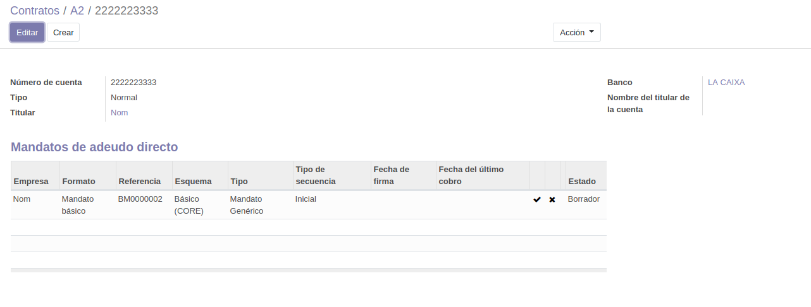

Creación de contratos¶
La creación o alta de contratos se realiza mediante la ayuda de un asistente para facilitar la creación de la estructura subyacente.
En el menú ISP » Administración » Contratos se muestran los contratos actualmente definidos.

Haga clic en el botón Crear contrato para abrir el asistente de creación de contratos.
Contrato¶
{kind=link}
En la parte superior derecha se muestra una barra de progreso con las diferentes etapas del asistente.
En
Empresaseleccione el cliente con el que desee trabajar en el desplegable. La última opción del desplegable esCrear y editar, que le permite crear un cliente si aún no existe.Si el cliente no existe, deberá crearlo:
Haga clic en la opción
Crear y editardel desplegable deEmpresa.Se abre una ficha de cliente nuevo:
Rellene como mínimo los campos obligatorios (los campos con un fondo de color azul).
En el apartado
Bancodebe especificar como mínimo una cuenta bancaria. Haga clic enAgregar registro. Se añade una fila en la lista.- En la columna
Banco, seleccione el banco en el desplegable. Si no lo encuentra, puede dejarse en blanco, ya que es un campo opcional. - En la columna
Número de cuenta, escriba el número de cuenta. Si desea efectuar domiciliaciones SEPA, este número de cuenta deberá ser un número IBAN correcto.
- En la columna
Haga clic en
Guardar.
Nos aparece por defecto un
Tipo de contrato: si es necesario, puede seleccionar otro.En
Fecha de inicioespecifique la fecha de alta del contrato. Por defecto se selecciona la fecha de hoy.Haga clic en
Siguiente.
{kind=link}
Puntos de Entrega¶
{kind=link}
En la cabecera se muestran los datos de la primera pantalla, que también se irán mostrando en todas las pantallas del asistente.
En esta pantalla se definen los puntos de entrega. Por defecto se crea uno, cuya dirección de instalación es la misma que la del cliente principal. Puede modificar este punto de entrega o crear direcciones nuevas.
- Si desea modificar los datos del punto de entrega creado por defecto, o bien desea crear un nuevo punto de entrega, seleccione
Agregar registroen la lista del apartadoDPs.- La ficha que se abre es similar a la de creación de cliente nuevo, pero esta vez sin los datos de cuenta bancaria.
Haga clic en Siguiente.
Líneas Contrato¶

En esta pantalla se definen las líneas de contrato de cada uno de los puntos de entrega creados en el paso anterior.
Seleccione o especifique los siguientes campos:
Punto de entrega. Por defecto se muestra el primer punto de entrega creado en la pantalla anterior.
Producto.
Descripción. Por defecto se toma la descripción del producto seleccionado. Puede editarla para esta línea de contrato concreta.
Fecha de inicio. Fecha de alta del servicio. Por defecto toma la fecha de inicio del contrato (definida en la parte superior de la pantalla). Puede ser una fecha posterior a la fecha de inicio del contrato, pero nunca anterior.
Opción de pago. Prepago o Postpago. Por defecto la del producto.
Unidad de facturación. Número de intervalos de facturación. Por defecto la del producto.
Intervalo de facturación. Meses o Años. Por defecto la del producto.
Precio unitario(precio lista). Por defecto el del producto.
Descuento. Descuento sobre el precio lista que se aplicará de forma recurrente.
Fecha promo(opcional). Fecha final de vigencia de la promoción.Advertencia
Debe especificarse la fecha del último día del período de promoción.
Descuento promo. Descuento que se aplicará sobre el precio de lista durante el período de promoción. Una vez finalizado este período, se aplicará el descuento normal, si existe.
Haga clic en Siguiente.
Prod. Puntuales¶
{kind=link}
En esta pantalla se definen líneas de productos o cargos puntuales. En esta pantalla pueden definirse cargos iniciales puntuales como altas, compras de dispositivos, etc.
No es necesario especificar cargos puntuales en esta pantalla y puede omitirla.
Haga clic en Siguiente.
Finalizar¶
{kind=link}
Esta es la pantalla final del asistente. En el apartado Crear Contrato
puede marcar o desmarcar la opción de crear tareas.
Nota
En la ficha del maestro de productos existen 3 campos que indican el número de recursos y de qué tipo creará automáticamente este asistente. Estos 3 campos solamente los utiliza este asistente.
Cuando pulse Finalizar en el asistente, además de las líneas de contrato,
se crearán automáticamente los correspondientes recursos especificados
por la ficha del producto.
Asimismo, si se marca la opción de crear tareas, se creará una tarea de configuración por cada recurso creado. Estas tareas se crean en el proyecto definido en el Contrato.
En el apartado Líneas prepago se muestran cargos que deben aplicarse cuando:
- existan líneas de contrato con periodicidad mensual y con la opción de prepago
Estos cargos se crearán como cargos puntuales que se cargarán en la siguiente (primera) factura que se realice. El precio unitario se ajusta al número proporcional de días desde la fecha de alta.
Haga clic en Finalizar.
Se muestra el contrato recién creado.
{kind=link}
Validación del contrato¶
Para poder validar el contrato creado y así poder generar facturas, deben cumplirse las siguientes condiciones:
Los recursos creados deben estar en estado Abierto. Para modificar el estado de un recurso u otros datos del mismo, haga clic en el icono situado en la última columna de la fila correspondiente al recurso que desea editar.
Debe existir un mandato de adeudo directo válido para cada cuenta bancaria definida en el cliente del contrato.
Haga clic en el número de cuenta del campo
Banco.Se abre la ficha de la cuenta bancaria:
En el apartado
Mandatos de adeudo directose muestran los madatos actualmente definidos.Cree un mandato nuevo (o edite el mandato existente):
- En
Tipo de mandato, seleccione Recurrente. - En
Fecha de la firma del mandato, seleccione la fecha inicial del mandato. - Opcionalmente, en
Escaneado del mandato, seleccione un fichero local con la imagen escaneada o PDF del documento firmado por el cliente. - Haga clic en
Save & Close.
- En
Haga clic en
Guardaren la parte superior de la pantalla para guardar los datos modificados de la cuenta bancaria.Ahora debe validar el mandato. En las últimas columnas de la lista de mandatos se muestran, en orden inverso, el
Estado, un icono para cancelar el mandato y un icono (si el estado del mandato es Borrador) para validar el mandato. Haga clic en el icono para validar el mandato, si aún está en Borrador.La ficha del banco debería tener un aspecto similar al siguiente. Observe la validez del mandato.
{kind=link}
{kind=link}
{kind=link}